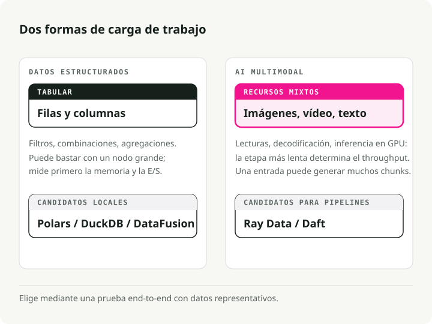
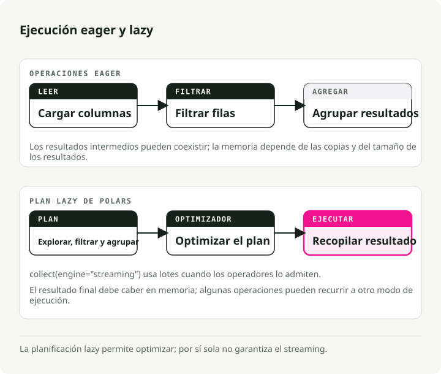
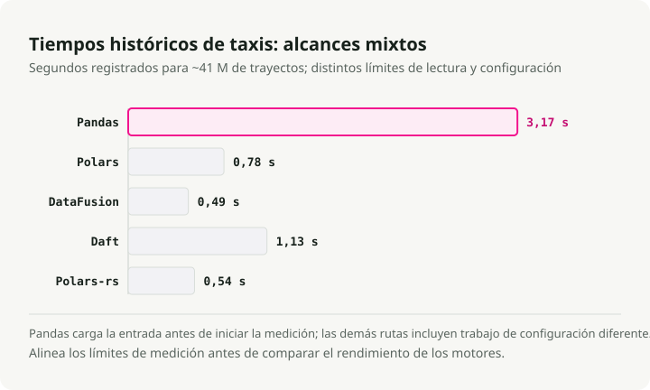
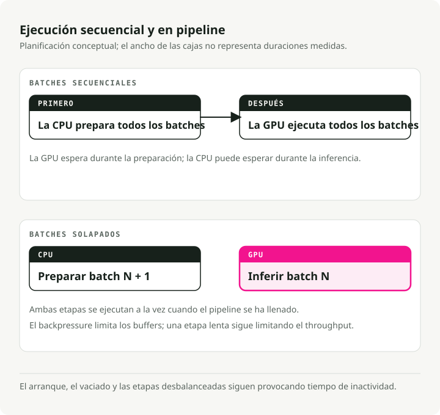
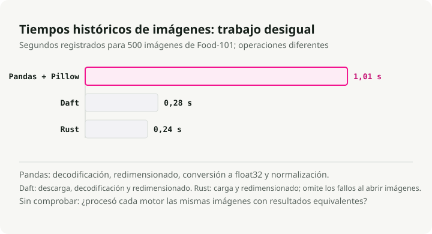
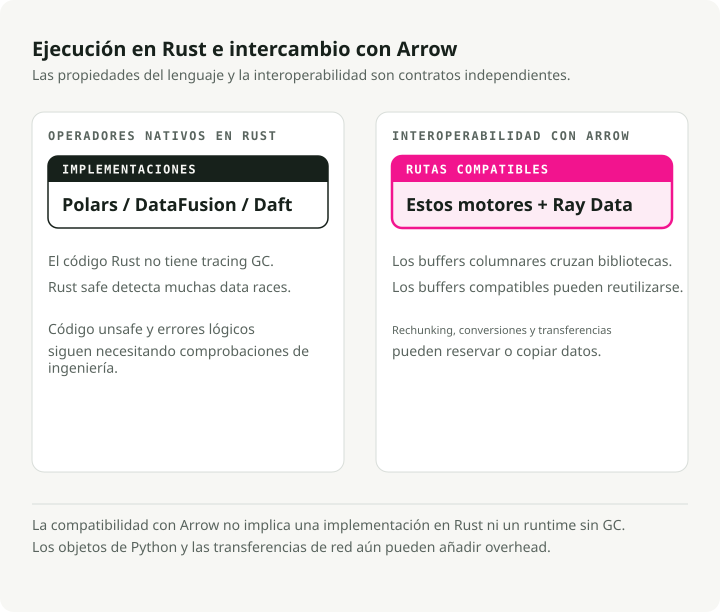
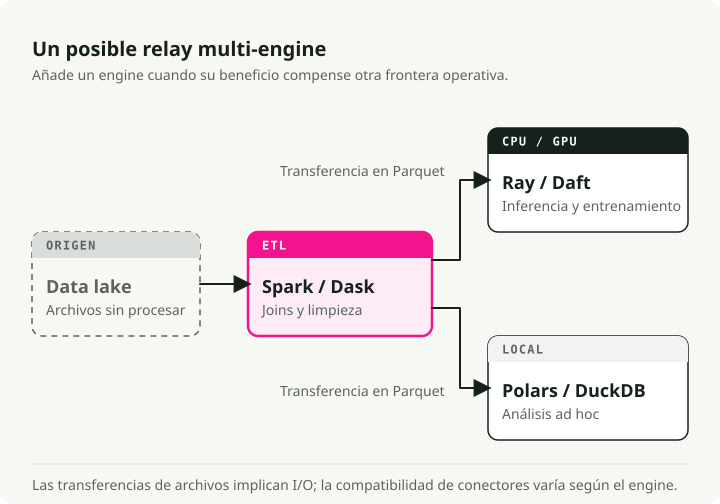
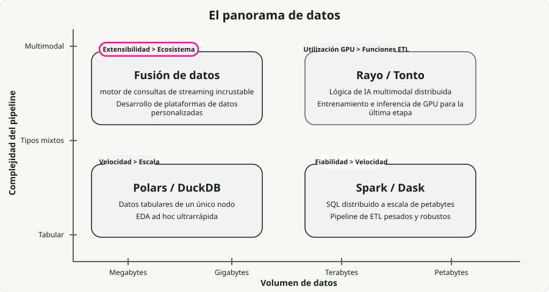

Traducción automática
Este artículo se tradujo automáticamente a partir de la versión original en inglés.
Motores modernos de procesamiento de datos comparados: Polars, DataFusion, Daft, Ray Data, Pandas y Spark
Durante años, Pandas se encargó del trabajo tabular en memoria y Apache Spark del distribuido. Esa división funcionaba bien cuando los datos eran estructurados.
Las cargas modernas ya no siempre son estructuradas. Los pipelines de imagen, audio y vídeo ahora conviven con los tabulares, y en cuanto entra en juego la inferencia con GPU, el recolector de basura de la JVM y el GIL de Python dejan de ser una molestia y pasan a ser el cuello de botella. Esa es una parte importante de por qué ha despegado una nueva generación de motores construidos sobre Rust y Apache Arrow.
Durante el último año he movido la mayoría de mis pipelines de un solo nodo a Polars, y quería ver cómo se compara realmente con el resto del nuevo stack. Así que hice benchmarks de Polars, DataFusion, Daft, Ray Data y Spark sobre conjuntos de datos reales: trayectos de taxi de NYC para la parte tabular e imágenes de Food-101 para la parte multimodal.
Todo el código está en el repositorio engine-comparison-demo. Clónalo y ejecuta los benchmarks en tu propio hardware: tus números serán distintos a los míos, y precisamente de eso se trata.
TL;DR: En los benchmarks más agradecidos para marketing, los motores nativos en Rust alcanzan mejoras de hasta 94x frente a Pandas en un solo nodo. En cargas reales verás algo más modesto pero consistente: Polars y DataFusion son dos valores seguros por defecto. Para pipelines multimodales, los motores con ejecución en pipeline como Ray Data y Daft llegan a ir hasta 18x más rápido que Spark porque de verdad mantienen las GPU ocupadas. No hay un ganador absoluto. La elección correcta depende de tus datos, de tu escala y de si hay GPU en el bucle.
Tipos de cargas de procesamiento de datos
Los motores se especializan, así que la primera pregunta es qué tipo de carga tienes realmente. La mayor división es entre estructurada y multimodal.

Datos estructurados / tabulares. Filtrado, agregaciones, joins. Limitados por CPU, normalmente en memoria. Mucho de este trabajo corre en clústeres distribuidos que en realidad no necesitaban ser distribuidos: alrededor del 90% de las consultas procesan menos de 1 TB de datos, algo que hoy en día cabe sin problema en una sola máquina.
IA multimodal. Imágenes, audio, vídeo. Limitada por GPU en la parte de inferencia, pero el preprocesado en CPU es lo que te mata. Los modelos de deep learning consumen datos más rápido de lo que las CPU pueden decodificarlos, así que en una g6.xlarge estándar (4 CPU por GPU), la utilización de la GPU cae por debajo del 20%. Todo el pipeline acaba limitado por lo rápido que puedas alimentar la GPU.
Los motores nuevos apuntan a ambos escenarios. Rust les da velocidad, Arrow les da intercambio de datos zero-copy entre procesos, y la ejecución en streaming les permite manejar datasets más grandes que la RAM.
Parte 1: procesamiento en un solo nodo
El cuello de botella de Pandas no es un bug. Es el diseño. Pandas carga los ficheros en RAM de forma eager, copia resultados intermedios en casi cada operación y se queda en un único hilo por culpa del GIL. En los benchmarks PDS-H con scale factor 10, Pandas tarda unos 365 segundos en completar una batería estándar de consultas. El motor de streaming de Polars termina el mismo trabajo en 3,89 segundos: aproximadamente 94x más rápido.

Polars: procesamiento de datos tabulares
Polars ha sustituido a Pandas como opción por defecto para ETL local serio en muchos equipos con los que he hablado. Está escrito en Rust y usa ejecución lazy: en lugar de ejecutar cada línea según llega, construye un plan de consulta, lo optimiza (predicate pushdown, projection pruning, column pruning) y después lo ejecuta sobre todos los núcleos de CPU en lotes de streaming.
La diferencia aumenta a medida que crecen los datos. En scale factor 100 (~100 GB), el motor de streaming de Polars terminó en 23,94 segundos frente a 152,27 segundos de su propio motor en memoria: aproximadamente 6x más rápido, sobre datos más grandes que la RAM.
De engine_comparison_examples.ipynb:
import polars as pl
# scan_parquet reads only the schema — no data loaded yet
q = (
pl.scan_parquet("yellow_tripdata_2024-01.parquet")
.filter(
(pl.col("trip_distance") > 5.0)
& (pl.col("total_amount") > 30.0)
)
.group_by("payment_type")
.agg(
pl.col("total_amount").mean().alias("avg_fare"),
pl.col("trip_distance").mean().alias("avg_distance"),
pl.len().alias("trip_count"),
)
)
# The entire plan is optimized and executed here, in parallel
result = q.collect()
La diferencia con Pandas no está en la API. Está en la arquitectura. Polars construye primero el plan y optimiza todo el pipeline antes de tocar los datos. El filter se empuja hacia abajo hasta el lector de Parquet, así que se omiten grupos completos de filas. Solo se leen del disco las columnas referenciadas en la consulta. Pandas no puede hacer nada de eso: cada línea se ejecuta en cuanto se parsea y las copias intermedias aparecen por todas partes.
Apache DataFusion: motor de consultas extensible
Mientras que Polars es una librería que usas directamente, DataFusion es el motor sobre el que construyes otros motores. Impulsa InfluxDB 3.0, GreptimeDB y el acelerador Comet para Spark de Apple.
En noviembre de 2024, DataFusion se convirtió en el motor de un solo nodo más rápido para consultar ficheros Parquet en ClickBench, por delante de DuckDB, chDB y ClickHouse en el mismo hardware. Más tarde, el equipo de Embucket ejecutó TPC-H con scale factor 1000 (~1 TB) en un solo nodo sobre él. Es una cifra útil para recordar cada vez que alguien dice que necesita un clúster.
De engine_comparison_examples.ipynb:
from datafusion import SessionContext
ctx = SessionContext()
ctx.register_parquet("taxi", "yellow_tripdata_2024-01.parquet")
# SQL executed directly against Parquet — no intermediate copies
df = ctx.sql("""
SELECT payment_type,
COUNT(*) AS trip_count,
AVG(trip_distance) AS avg_distance,
AVG(total_amount) AS avg_fare
FROM taxi
WHERE trip_distance > 5.0 AND total_amount > 30.0
GROUP BY payment_type
ORDER BY trip_count DESC
""")
result = df.to_pandas()
La fortaleza de DataFusion es su modularidad. Las API de extensión cubren catálogos personalizados, table providers, reglas del optimizador y planes de ejecución, por eso aparece cada vez que alguien está construyendo una plataforma de datos a medida o integrando un motor de consultas en su propio producto.
Daft: procesamiento de datos multimodales
Daft es el único que se toma en serio los datos multimodales. Imágenes, audio, vídeo, embeddings: son tipos reales dentro del DataFrame, no bytes opacos. Pandas trata una imagen como un array de bytes, Spark la serializa a través de la JVM, pero Daft tiene expresiones nativas en Rust para decodificar imágenes, obtener URLs y producir tensores sin el bucle de Python en medio.
De engine_comparison_examples.ipynb:
import daft
df = daft.read_parquet("yellow_tripdata_2024-01.parquet")
result = (
df.where(
(daft.col("trip_distance") > 5.0)
& (daft.col("total_amount") > 30.0)
)
.groupby("payment_type")
.agg(
daft.col("total_amount").mean().alias("avg_fare"),
daft.col("trip_distance").mean().alias("avg_distance"),
daft.col("trip_distance").count().alias("trip_count"),
)
.collect()
)
La API te resultará familiar si conoces Pandas, pero el motor es el mismo stack Rust + Arrow que encuentras en Polars y DataFusion. Donde Daft compensa de verdad es cuando las “filas” de tu DataFrame son imágenes, PDFs o tensores.
Benchmark: rendimiento en un solo nodo
Ejecuté los cuatro motores, además de Rust nativo vía Polars-rs, sobre ~41M de trayectos amarillos de taxi de NYC para todo el año 2024. Resultados completos en el repo de la demo:

A este tamaño (~660 MB en Parquet), cualquier motor moderno es rápido. El titular de 94x de Polars frente a Pandas viene de PDS-H, un benchmark analítico sintético; en mi carga de 41M de filas obtuve una mejora real y consistente frente a Pandas, pero ni de lejos 94x. El resultado más interesante es que Polars, DataFusion, Daft y Rust puro vía Polars-rs quedan todos más o menos en la misma liga para esta carga. DataFusion aventaja ligeramente al resto en tiempo total. Polars es el más agradable de escribir y un todoterreno sólido.
Parte 2: manejo de datos multimodales
El ETL tabular normalmente reduce datos: filtra, agrega, escribe menos de lo que lee. Los pipelines multimodales de IA hacen lo contrario. La ruta de un solo documento puede descomponerse en docenas de fragmentos de texto y vectores de embeddings.
Spark trata imágenes y audio como blobs binarios. Tocarlos desde Python implica un salto de JVM a Python a través de Py4J, procesarlos con Pillow o OpenCV y luego serializarlos de vuelta. Ese viaje de ida y vuelta domina el tiempo total en muchas cargas reales.
Ejecución en pipeline y utilización de GPU
Spark paraleliza particiones entre núcleos, pero ahí está la trampa: su ejecución por etapas (bulk synchronous). Dentro de una misma tarea, cada paso (descarga, decodificación, clasificación) se ejecuta secuencialmente en un único núcleo, sin solapamiento asíncrono. Y todas las tareas de una etapa tienen que terminar antes de que empiece la siguiente. Las GPU quedan ociosas mientras las CPU preprocesan; las CPU quedan ociosas mientras las GPU ejecutan la inferencia. Cada etapa materializa su salida antes de que empiece la siguiente, añadiendo presión de memoria a todo lo demás.

La ejecución en pipeline es la alternativa. En lugar de ejecutar etapas una detrás de otra, el motor solapa I/O, trabajo de CPU e inferencia en GPU, de modo que solo el componente más lento está esperando en cada momento.
Benchmark: procesamiento de imágenes
Hice benchmarks de procesamiento de imágenes sobre 500 fotografías reales del dataset Food-101. Resultados del repo de la demo:

Polars y DataFusion no aparecen aquí porque no tienen operaciones de imagen nativas: ese trabajo recaería en Python secuencial y la comparación no sería justa. Las cifras que importan: las operaciones de imagen nativas en Rust de Daft son 3,6x más rápidas que Pandas + Pillow, y Rust puro es 4,2x más rápido que Pandas a lo largo de todo el pipeline.
Parte 3: procesamiento distribuido
Cuando una sola máquina ya no basta, tienes que decidir cómo repartir el trabajo. Aquí es donde las diferencias arquitectónicas entre motores empiezan de verdad a importar.
Apache Spark
Spark sigue siendo lo primero a lo que recurriría para ETL tabular a escala de petabytes con shuffles complicados. La tolerancia a fallos mediante lineage de RDD funciona, el ecosistema es enorme (Databricks, EMR) y los joins de varios TB son terreno conocido. Las cargas de IA son donde se rompe. Las tareas se planifican sobre ejecutores JVM que no saben nada de GPU, así que las GPU se quedan ociosas esperando al preprocesado en CPU.
from pyspark.sql import SparkSession
from pyspark.sql import functions as F
spark = SparkSession.builder \
.appName("TaxiETL") \
.config("spark.sql.adaptive.enabled", "true") \
.getOrCreate()
orders = spark.read.parquet("s3a://lake/taxi/*.parquet")
zones = spark.read.csv("s3a://lake/taxi_zones.csv", header=True)
# Spark excels at this: joining massive tables with a shuffle
result = (
orders
.filter(F.col("trip_distance") > 5.0)
.join(zones, orders.PULocationID == zones.LocationID, "inner")
.groupBy("Borough")
.agg(
F.sum("total_amount").alias("total_revenue"),
F.avg("total_amount").alias("avg_fare"),
)
.orderBy(F.desc("total_revenue"))
)
Ray Data: utilización de GPU
Ray Data se diseñó pensando en cargas de IA. En lugar de las barreras por etapas de Spark, usa un modelo de streaming que mantiene las GPU alimentadas. La funcionalidad que justifica su existencia es la planificación de recursos mixtos: puedes declarar que un actor quiere “1 GPU, 4 CPUs” y que otro solo quiere CPU, y Ray resuelve el resto.
Amazon informó de ahorros de más de 120 millones de dólares al año al mover cargas concretas de Spark a Ray. Las cifras de su PoC fueron un 91% mejor de eficiencia de costes y 13x más datos por hora; en producción, el número quedó en un 82% mejor de eficiencia de costes por GiB de entrada desde S3.
import ray
ray.init()
ds = ray.data.read_images("s3://my-bucket/food101/")
class ImageClassifier:
def __init__(self):
import torch
from torchvision.models import resnet18, ResNet18_Weights
self.model = resnet18(weights=ResNet18_Weights.DEFAULT).cuda()
self.model.eval()
self.preprocess = ResNet18_Weights.DEFAULT.transforms()
def __call__(self, batch):
import torch
tensors = torch.stack([
self.preprocess(img) for img in batch["image"]
]).cuda()
with torch.no_grad():
preds = self.model(tensors)
return {
"prediction": preds.argmax(dim=1).cpu().numpy(),
"confidence": preds.max(dim=1).values.cpu().numpy(),
}
# ActorPoolStrategy creates persistent GPU workers
predictions = ds.map_batches(
ImageClassifier,
compute=ray.data.ActorPoolStrategy(size=4),
num_gpus=1,
batch_size=64,
)
predictions.write_parquet("s3://output/predictions/")
Un detalle que conviene conocer: a medida que añades más CPU por GPU, Ray Data escala mientras otros motores se estancan. En los benchmarks de Anyscale, pasar de una proporción CPU/GPU de 4:1 a 32:1 dio una mejora de 3x en inferencia de imágenes, porque los procesos de alimentación en CPU por fin siguieron el ritmo de la GPU.
Daft (distribuido)
Daft escala horizontalmente a través de su motor Flotilla: un worker Swordfish por nodo, con Flotilla por encima haciendo la planificación a nivel de clúster. Swordfish gestiona la ejecución local en Rust y encadena I/O con cómputo mediante streaming en lotes pequeños, de modo que cada nodo se mantiene ocupado sin esperar a la siguiente etapa.
En cuatro cargas multimodales, Daft con Flotilla fue entre 2x y 18x más rápido que Spark. En la más pesada (detección de objetos en vídeo con YOLO11n), Spark tardó más de 3,5 horas y Daft terminó en menos de 12 minutos: 18x, sobre todo porque Spark pierde ese tiempo en serialización y barreras entre etapas.
Un matiz: Anyscale, la empresa detrás de Ray, publicó sus propios benchmarks mostrando que Ray Data cerraba la brecha o incluso la invertía en instancias con muchas CPU y tuning manual. Ahora mismo ambos se adelantan mutuamente trimestre a trimestre.
import daft
from daft import col
# Daft's Flotilla engine distributes work across the cluster
df = daft.read_parquet("s3://data-lake/pdf_metadata/*.parquet")
# Download PDFs — Daft parallelizes downloads in Rust
df = df.with_column("pdf_bytes", col("pdf_url").url.download())
# Define a GPU UDF for embedding generation
@daft.udf(return_dtype=daft.DataType.list(daft.DataType.float32()))
class TextEmbedder:
def __init__(self):
from sentence_transformers import SentenceTransformer
self.model = SentenceTransformer("all-MiniLM-L6-v2", device="cuda")
def __call__(self, text_col):
texts = text_col.to_pylist()
embeddings = self.model.encode(texts, batch_size=32)
return [emb.tolist() for emb in embeddings]
# Daft schedules CPU downloads and GPU embeddings simultaneously
df = df.with_column("embedding", TextEmbedder(col("text")))
df.write_parquet("s3://output/embeddings/")
Comparativa directa en distribuido
| Característica | Spark | Ray Data | Daft (Flotilla) |
|---|---|---|---|
| Modelo de ejecución | Una tarea por núcleo, basado en particiones | Tareas y actores en streaming | Un Swordfish por nodo, lotes en streaming |
| Puntos fuertes | SQL/ETL masivo, tolerancia a fallos | Cómputo heterogéneo, saturación de GPU | Pipelines multimodales, memoria acotada |
| Utilización de GPU | Mala (por etapas, sin solapamiento CPU/GPU) | Excelente (asignación explícita de recursos) | Excelente (pipeline asíncrono de I/O y cómputo) |
| Carga de tuning | Alta (memoria del executor, núcleos, particiones) | Media (tamaño de lote, object store) | Baja (el motor gestiona los recursos) |
| Mejor para | ETL tabular a escala petabyte | Entrenamiento/inferencia con CPU+GPU mixtas | Carga de datos multimodales para PyTorch |
Parte 4: el papel de Rust y Arrow
Por debajo de la competencia, la convergencia es la historia más interesante. Polars, Daft, DataFusion y el núcleo de Ray comparten la misma base: Apache Arrow como formato en memoria y Rust para la concurrencia.

Eso no es solo pulcritud arquitectónica. La interfaz Arrow PyCapsule (protocolo __arrow_c_stream__) te permite pasar datos entre motores sin serialización: calcular en DataFusion y pasar el resultado a Polars o PyArrow a coste cero; hacer preprocesado multimodal en Daft y alimentar lotes Arrow directamente a un PyTorch DataLoader.
from datafusion import SessionContext
import polars as pl
# Compute in DataFusion (Rust-native execution)
ctx = SessionContext()
ctx.register_parquet("events", "events.parquet")
df = ctx.sql("""
SELECT user_id, COUNT(*) as event_count
FROM events WHERE event_type = 'purchase'
GROUP BY user_id HAVING COUNT(*) > 5
""")
# Zero-copy conversion to Arrow, then to Polars
arrow_table = df.to_arrow_table()
df_polars = pl.from_arrow(arrow_table)
# Continue analysis in Polars
result = df_polars.with_columns(
pl.col("event_count").rank().alias("rank")
).sort("rank")
Entonces, ¿por qué Rust en lugar de la JVM?
-
Sin pausas por garbage collection. Ownership y borrowing sustituyen al GC, así que no hay pausas stop-the-world ni picos impredecibles de latencia. Los errores OOM que aparecen a escala en sistemas JVM en gran medida desaparecen.
-
Sin impuesto de cabecera de objeto. La JVM añade 12–16 bytes de cabecera a cada objeto. Repartido entre miles de millones de objetos pequeños, eso ya es un presupuesto de memoria por sí solo. Rust no paga ese coste.
-
Seguridad de hilos en tiempo de compilación. El sistema de tipos de Rust rechaza las data races antes de compilar el binario, así que la ejecución multihilo no viene acompañada de la clase habitual de bugs sutiles de concurrencia.
Combinado con el diseño de memoria columnar de Arrow, desaparece el cuello de botella de serialización que consume hasta el 30% de los ciclos de CPU en stacks JVM heredados.
Parte 5: adopción de múltiples motores
La respuesta honesta es que no eliges un único motor. Los compones.

En producción, esto suele parecerse a una carrera de relevos. Los datos brutos en un lake se limpian y se unen con Spark (o Dask si tu equipo es solo Python) en tablas Parquet o Delta. Esas tablas fluyen hacia Ray Data o Daft para el trabajo de última milla —inferencias en GPU, generación de embeddings, transformaciones multimodales— para el que Spark nunca fue diseñado. Para análisis ad hoc y desarrollo local, Polars y DuckDB te dan feedback inmediato sin levantar un clúster.
Lo que hace posible esta composición son los formatos abiertos: Parquet, Delta, Iceberg, Arrow. Todos los motores del stack los leen y escriben de forma nativa, así que el traspaso entre etapas es solo una ruta de fichero.
Resumen de casos de uso por motor

| Tarea | Herramienta recomendada | Trade-off |
|---|---|---|
| Análisis ad hoc en un portátil | Polars / DuckDB | Velocidad > Escala |
| SQL ETL masivo (petabyte) | Apache Spark | Fiabilidad > Velocidad |
| Escalado nativo en Python | Dask | Simplicidad > Optimización |
| Entrenamiento de LLM / visión por computador | Ray Data | Utilización de GPU > Funcionalidades ETL |
| Carga de datos multimodales | Daft | Experiencia de desarrollo > Ecosistema |
| Construcción de motores de consulta personalizados | DataFusion | Extensibilidad > Funcionalidades listas para usar |
Escalado diagonal
Durante mucho tiempo la elección fue escalar verticalmente (una máquina más grande) o escalar horizontalmente (más máquinas). Polars Cloud está haciendo algo intermedio, a lo que llaman escalado diagonal: escalar horizontalmente mientras lee desde cloud storage para exprimir al máximo el I/O y luego colapsar a un único nodo grande una vez que filtros y agregaciones han reducido los datos, saltándose por completo el shuffle distribuido.
La parte contraintuitiva: una instancia más grande y más cara puede salir más barata por job porque eleva tanto la utilización de la GPU que el tiempo total de ejecución cae más rápido de lo que sube la tarifa por hora.
Pruébalo tú mismo
El repositorio de la demo complementaria tiene todo lo necesario para reproducir estos benchmarks:
# Install dependencies
uv sync
# Run the tabular benchmark (~2.9M NYC taxi trips)
uv run python -m engine_comparison.benchmarks.tabular
# Run the multimodal benchmark (500 real food photos)
uv run python -m engine_comparison.benchmarks.multimodal
# Run native Rust benchmarks (Polars-rs + image crate)
cd rust_benchmark && cargo run --release && cd ..
El repo también incluye notebooks para comparaciones de API lado a lado y configuraciones con Docker Compose para ejecuciones distribuidas locales de Spark, Ray y Daft.
Ideas clave
-
No distribuyas si no hace falta. Polars y DataFusion manejan hasta ~1 TB en una sola máquina, con mejoras consistentes frente a Pandas (y 94x en benchmarks analíticos duros como PDS-H). Recurre a un clúster cuando de verdad hayas alcanzado los límites de un solo nodo, no antes.
-
Los límites de Pandas son arquitectónicos. Ejecución eager, un solo hilo, copias intermedias: son decisiones de diseño deliberadas que se convierten en cuellos de botella cuando los datos crecen. La ejecución lazy con predicate pushdown y column pruning es lo que cambia esto.
-
La ejecución en pipeline supera a las barreras por etapas en trabajo con GPU. Las etapas de Spark dejan las GPU ociosas mientras las CPU preprocesan. Ray Data y Daft solapan I/O, CPU y GPU para que ningún recurso se quede esperando a la siguiente etapa.
-
Usa cada motor para aquello en lo que es bueno. Spark para ETL a escala petabyte, Polars y DuckDB para análisis ad hoc, Ray Data para pipelines de entrenamiento con GPU, Daft para carga de datos multimodales, DataFusion para motores de consulta personalizados.
-
Rust + Arrow es la base común. No es casualidad que Polars, DataFusion, Daft y Ray converjan aquí: elimina las pausas de GC, la sobrecarga de serialización entre procesos y toda una clase de bugs de concurrencia.
Si no tienes claro por dónde empezar: Polars en una sola máquina, y después Daft o Ray Data cuando entren GPU en la ecuación. Spark solo cuando de verdad tengas un petabyte.
Referencias
Benchmarks y datos de rendimiento
- Benchmarks PDS-H de Polars - Polars streaming frente a Pandas en SF-10 (94x) y SF-100 (6,4x sobre memoria)
- Resultados de DataFusion en ClickBench (nov 2024) - El motor de consulta Parquet en un solo nodo más rápido
- Embucket: TPC-H SF-1000 sobre DataFusion - TPC-H completo a ~1 TB en un solo nodo
- Migración de Amazon de Spark a Ray - Ahorro de 120 M$/año, 82% de eficiencia de costes en producción
- Benchmarks de Daft Flotilla - Entre 2x y 18x más rápido que Spark en cargas multimodales
- Benchmarks de Anyscale: Ray vs. Daft - Ray Data ~30% de mejora media en multimodal
Motores y frameworks
- Polars - Librería DataFrame en Rust con ejecución lazy
- Apache DataFusion - Motor de consultas embebible en Rust (GitHub)
- Daft - DataFrame distribuido nativo para multimodal
- Ray - Framework de computación distribuida para IA (Data Internals)
- Apache Spark - Motor distribuido de ETL y SQL
- DuckDB - Motor SQL analítico in-process
- Dask - Computación paralela nativa en Python
Arquitectura y ecosistema
- Polars Cloud: escalado diagonal - Escalado dinámico vertical/horizontal
- Arquitectura de Daft Flotilla - Motor distribuido Swordfish + Flotilla
- Apache DataFusion Comet - Acelerador para Spark desarrollado originalmente en Apple
- Apache Arrow - Formato columnar en memoria (Flight RPC, interfaz PyCapsule)
- InfluxDB 3.0 + DataFusion - Base de datos de series temporales construida sobre DataFusion
- GreptimeDB - Base de datos de observabilidad que usa DataFusion
Repositorio de la demo
- engine-comparison-demo - Código complementario de este artículo: benchmarks, notebooks y Docker Compose para Spark/Ray/Daft
Datasets
- NYC Taxi Trip Records - Datos amarillos de taxi de NYC TLC (Parquet, ~2,9M filas/mes)
- Food-101 Dataset - 101K imágenes de comida de ETH Zurich (Bossard et al., ECCV 2014)